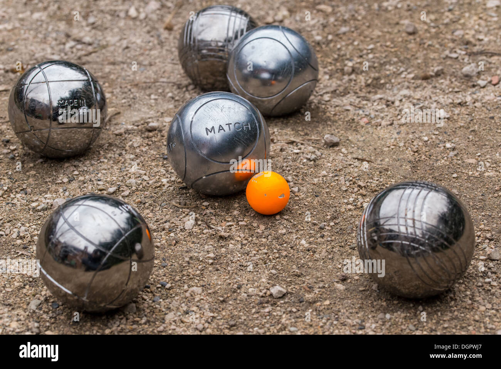

My Sports
In this page, I would like to introduce to my sports that I have play.
Like I told in the hobby page, I really love playing badminton as it the one of the sports that I can play with the current condition of my body. As playing badminton would not really make me use excessive force to move my body to catch the shuttercock.
Next is petanque. It is like the bowling field. This game is not that hard as the bowling game. But it is kind of tricky to play as the player need to form a strategy to win the game.

Lastly, I played congkak with my siblings whenever we want to play some traditional games.